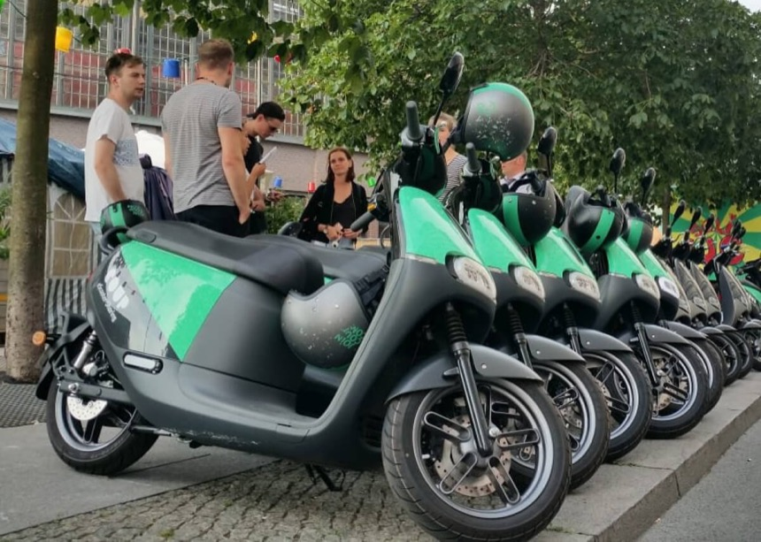
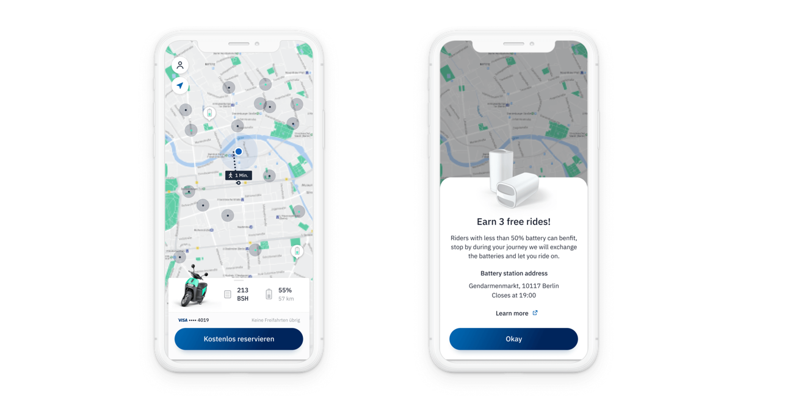

Scooter downtimeTime a moped spends off the road.
← All work
Coup
Urban mobility · Consumer and field ops · 3 min read
Coup
Mobility
I rebuilt Bosch’s e-moped rider app, and designed the tools that kept 5,000 mopeds on the road.
- The problem
- The rider app was built fast to get the fleet live, and left riders stuck at the moments that mattered. Behind it, field operations ran on WhatsApp and spreadsheets.
- What I did
- Rebuilt the ride from finding a moped to ending a trip, and designed a dispatcher dashboard and field worker app from a blank page.
- The result
- A rebuilt rider app in three cities, the first record of why rides were cancelled, and field work tracked in one system instead of group chats.

5,000
Electric mopeds across
Berlin, Paris and Madrid
Berlin, Paris and Madrid
1 in 8
Rides cancelled before the engine
started, with no reason recorded
started, with no reason recorded
Zero
Tools built for the field team
before this project
before this project
01The rider app
Rebuilt around the ride, not reskinned.
Interviews in all three cities kept returning one word: confidence. Riders wanted to know they’d picked the right moped, what the app was doing, and what to do when something failed. So we rebuilt every step around one question: what now?
Bluetooth dropped and unlocks failed, and the old app left riders guessing. We mapped every moment of hesitation, then rebuilt each one around clear guidance, honest errors and the fastest route back to riding.


The rebuilt ride: route, reservation, unlock and cancel.



02Cancellations
One in eight rides was cancelled. Nobody knew why.
Damaged moped, flat battery, missing helmet? Without a reason, every fix was a guess. We added one step to cancelling: a short list of reasons, one tap, done. For the first time, ops had a timestamped record of why rides failed.

A structured reason, asked at a moment riders were already in.
03Testing an idea
Test the expensive idea before building it.
Could riders swap flat batteries themselves, for ride credit? Proving it properly meant charging infrastructure that didn’t exist. So we ran a small in-app pilot and watched what riders actually did: enough for the business to decide without building anything.

Community battery swap pilot: testing intent before infrastructure.
04Field operations
Nothing existed. We built the whole thing.
Jobs arrived through group chats, repairs were logged if at all, and dispatchers had no live view of the fleet. There was no brief, so we started by riding along with field workers and sitting with dispatchers. Two needs came out of it, and two products.
The field app had to work in rain, traffic and winter, often one-handed and in gloves. Every control is large, obvious and hard to mistake.
Fleet status at a glance
Every moped’s availability, open issues and maintenance, live.
Jobs on the worker’s phone
Dispatchers assign and reprioritise. No more calls or chat threads.
Repairs that leave a record
Guided steps and consistent outcomes, so every job has a history.

Field app: assignment, status and maintenance log in one flow.

Maintenance report: consistent outcomes, building the ops picture over time.


The dispatcher’s ticket queue: every task categorised, assigned and tracked.
05How we measured it
Judged on the fleet, not the screens.
Task completionField jobs closed, and how fast.
Manual coordinationWork still running through chats and spreadsheets.
Rides per scooterTrips from each vehicle, each day it’s on the street.